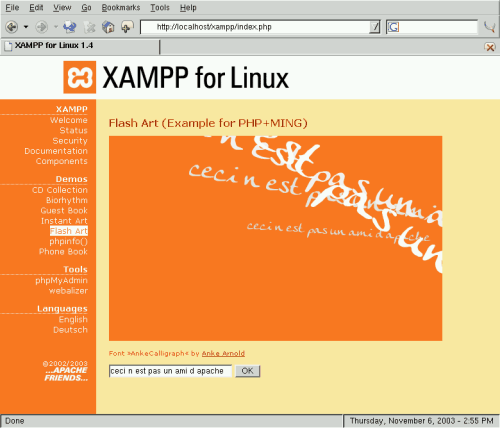

Images de XAMPP pour LinuxLe vieil adage dit qu'une image vaut mille mots. Voici quelques images capturées lors de l'installation de XAMPP.
Étape 1: TéléchargementUn simple clique sur un des liens suivant, c'est une bonne idée pour avoir la derniére version. :)
Étape 2: InstallationAprès le téléchargement, vous n'avez qu'à saisir les commandes suivantes :
Allez en mode commande (shell) Linux et connectez-vous en tant qu'administrateur système (root)
Version 32 bits :
su
chmod 755 xampp-linux-1.8.3-5-installer.run
./xampp-linux-1.8.3-5-installer.run
Version 64 bits :
su
chmod 755 xampp-linux-x64-1.8.3-5-installer.run
./xampp-linux-x64-1.8.3-5-installer.run
Avertissement : cette commande va écraser une version de XAMPP qui existerait déjà.
C'est tout. XAMPP est maintenant installé sous le répertoire /opt/lampp.
Pour démarrer XAMPP, il s'agit d'exécuter la commande suivante :
/opt/lampp/lampp start
Vous devriez maintenant voir des messages semblables à ceux-ci :
Starting XAMPP 1.8.3-5...
XAMPP: Starting Apache...ok.
XAMPP: Starting MySQL...ok.
XAMPP: Starting ProFTPD...ok.
Ready. Apache, MySQL and ProFTPD are running.
Si vous obtenez un message d'erreur, veuillez consulter le document
Linux FAQ.
Bon, jusqu'à présent c'était facile, mais comment vérifier que tout fonctionne vraiment?
Vous n'avez qu'à saisir l'URL suivant dans votre navigateur favori :
http://localhost
Maintenant, la page d'accueil de XAMPP devrait apparaître; elle contient
des liens pour vérifier l'état du logiciel ainsi que quelques petits
exemples de programmation.
 L'exemple
"Instant Art": un petit programme PHP/GD (depuis 0.9.6pre1, il s'agit
d'un exemple accrocheur écrit en PHP/Ming). Merci à  Anke Arnold pour sa police »AnkeCalligraph«. Anke Arnold pour sa police »AnkeCalligraph«.
Une question de sécurité (LECTURE OBLIGATOIRE!)Tel
que mentionné auparavant, XAMPP n'est pas destiné à un usage en
production mais seulement pour des développeurs dans un environnement de
développement. XAMPP est configuré de façon à être le plus ouvert
possible pour permettre au développeur de faire ce qu'il/elle veut. Ceci
est intéressant dans un contexte de développement mais en production
ceci pourrait s'avérer fatal.
Voici la liste des éléments de sécurité manquants dans XAMPP :
- L'administrateur MySQL (root) n'a pas de mot de passe.
- Le serveur MySQL est accessible depuis le réseau.
- ProFTPD utilise le mot de passe "lampp" pour l'utilisateur "daemon".
- phpMyadmin est accessible depuis le réseau.
- Les exemples sont disponibles depuis le réseau.
- MySQL et Apache sont en exécution sous le même utilisateur (daemon).
Pour corriger la plupart de ces faiblesses de sécurité, veuillez exécuter la commande suivante :
/opt/lampp/lampp security
Cette commande effectue une petite vérification de sécurité et rend votre installation de XAMPP plus sécuritaire.
Jusqu'à
la version 0.9.4, /opt/lampp/lampp ne pouvait que démarrer et arrêter
XAMPP. Depuis la version 0.9.5, plusieurs nouvelles options sont
possibles.
|